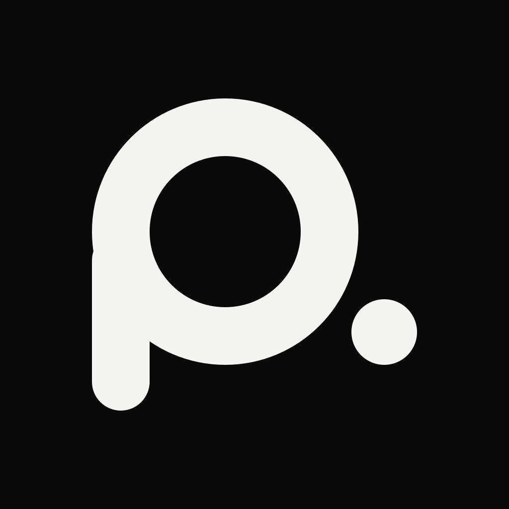
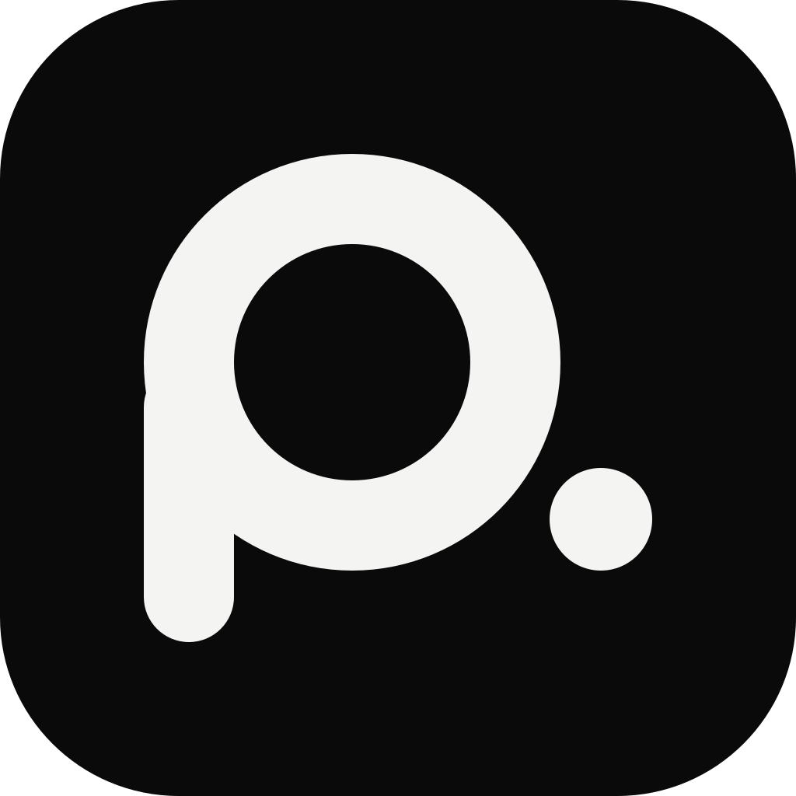
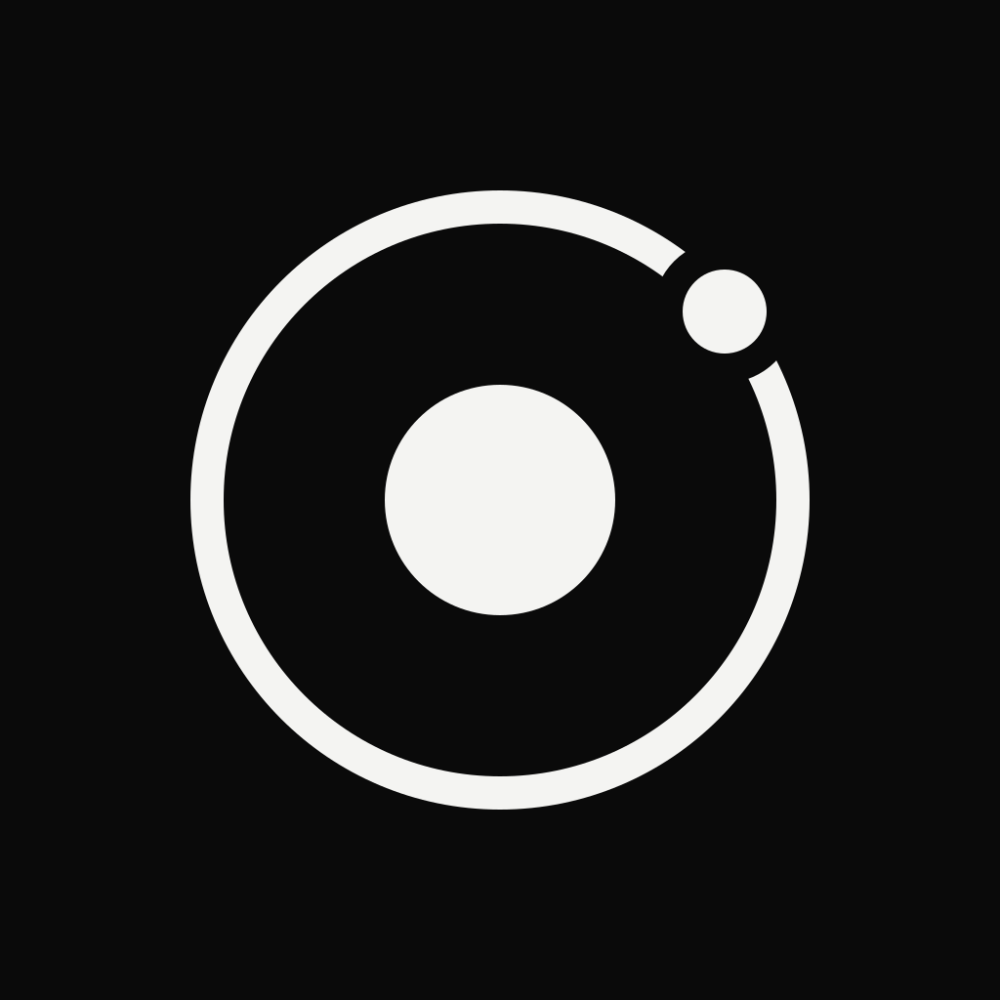
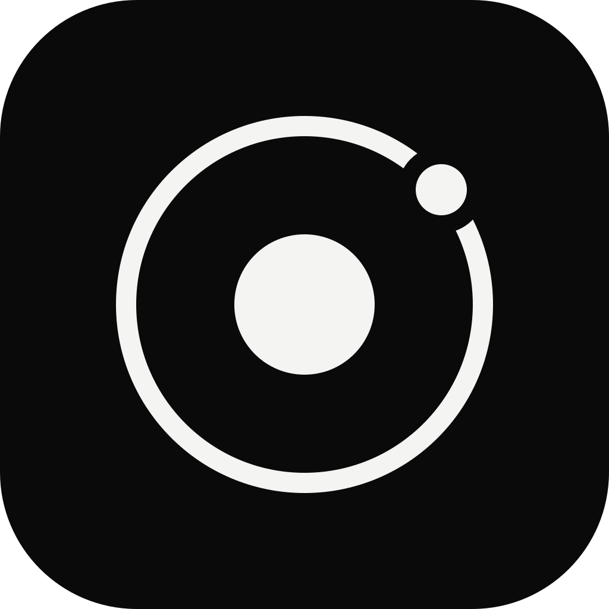
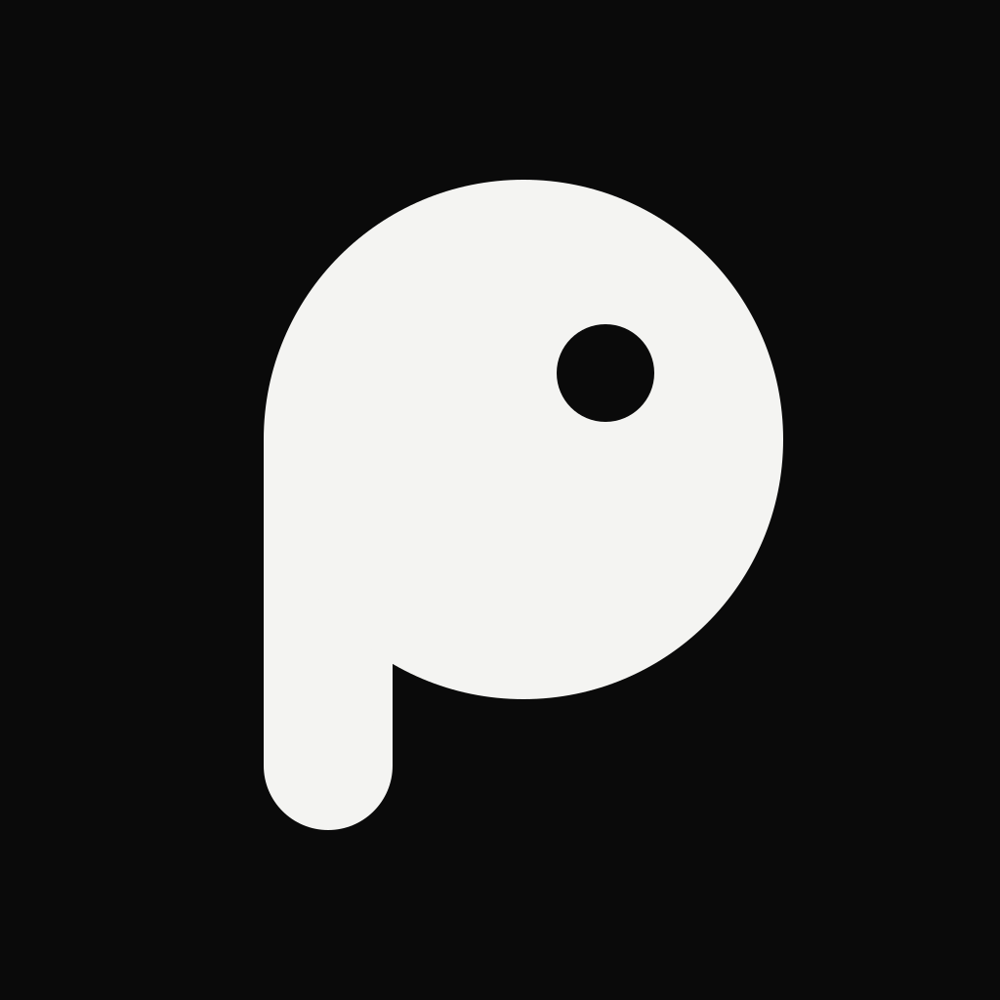
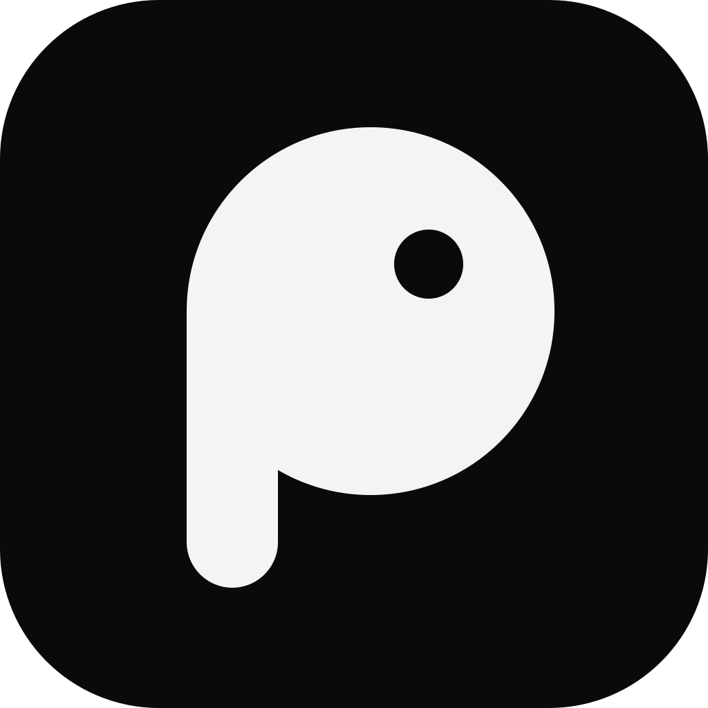

PIU · ÍCONE DO APP E FAVICON · RODADA 1
piu. ícones
Três direções, todas monocromáticas como o app. Cada uma aparece no tamanho de loja, na tela inicial clara e escura, no Android redondo e na aba do navegador em 16, 32 e 48 px reais.
1ap. — o logotipo condensado
A inicial do “piu.” com o ponto que já existe no logotipo. Mais fiel à marca escrita; lê como letra mesmo a 16 px.

iOS claro · Android adaptativo

Piu · mensagens sem internet16 · 32 · 48 px
1bÓrbita — o nó na malha
Você no centro, a malha em volta e um vizinho conectado. Conversa com as órbitas da tela de boas-vindas e com o painel do provider.

iOS claro · Android adaptativo

Piu · mensagens sem internet16 · 32 · 48 px
1cPassarinho — o “piu”ESCOLHIDO · brand/
Um p cheio que também é um passarinho de perfil. Mais caloroso e fácil de lembrar; o ponto vira o olho.

iOS claro · Android adaptativo

Piu · mensagens sem internet16 · 32 · 48 px